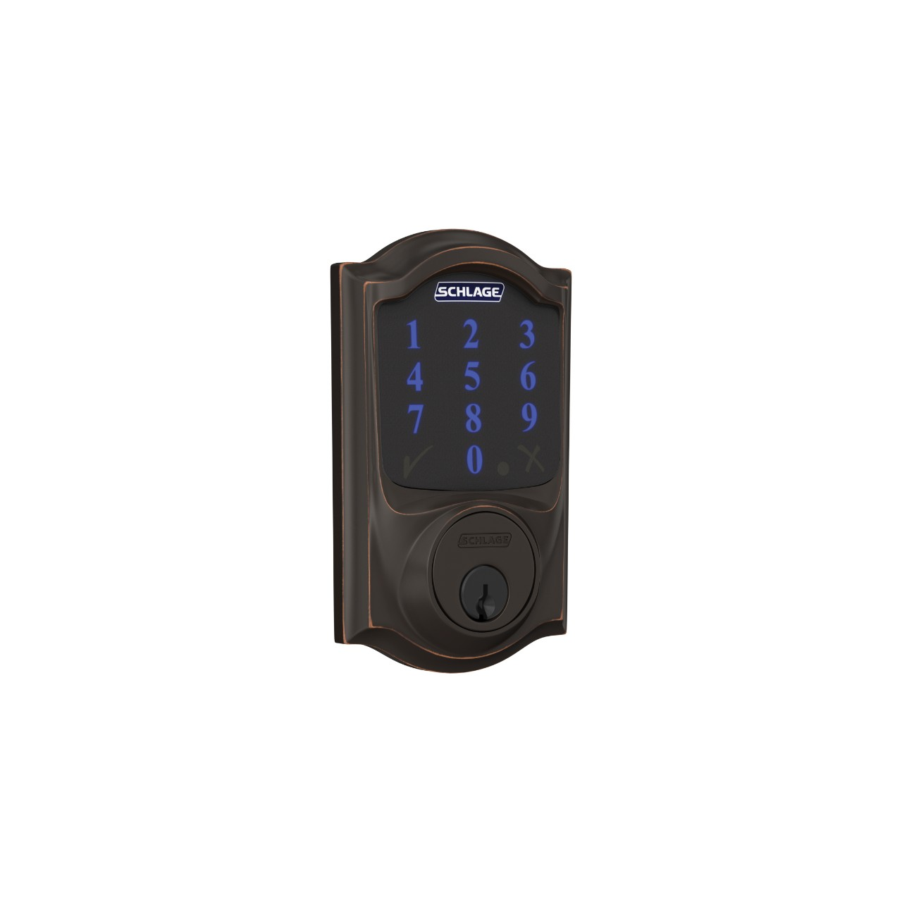

Guide · Locks
The best Z-Wave door lock for Home Assistant (2026)
A Z-Wave door lock is a deadbolt with a Z-Wave radio instead of a Wi-Fi one. It talks to a controller you own — normally a USB stick in the machine running Home Assistant — and it never phones a manufacturer's server to open your front door. That is the whole appeal, and it is why people still ask for one in 2026 even though almost every new lock ships as Thread/Matter or Wi-Fi.
The honest answer to "which Z-Wave door lock should I buy" is shorter than it used to be. The Schlage Connect is the reference model: still sold, still described by Schlage as a Z-Wave Plus lock with S2 security, and the one Home Assistant users are most likely to find documented pairing steps for. Below: what it is, what Home Assistant needs on its side, the inclusion steps that don't leave you locked out of your own network, and the caveats — including the fact that the field of current Z-Wave locks is narrow and getting narrower.

The pick: Schlage Connect
Schlage's own product page describes the Connect as combining "advanced features with the enhanced security of Z-Wave Plus", and says the lock "incorporates Z-Wave Plus S2 enhanced security, providing an additional layer of encryption". S2 is not a marketing word here — it is the inclusion mode Z-Wave JS prompts you for when you pair a lock, and it is the reason pairing a lock takes an extra thirty seconds compared with pairing a plug.
The model family is BE469, sold in two trims: Camelot and Century. The finishes show up in Schlage's own image filenames as three-digit codes — 716, 619, 625 — which is the usual Schlage shorthand for aged bronze, satin nickel and bright chrome. If you go shopping, treat "BE469ZP" as the Z-Wave Plus SKU in this family.
| Spec | Schlage Connect |
|---|---|
| Radio | Z-Wave Plus |
| Security | Z-Wave Plus S2, encrypted inclusion |
| Model family | BE469, trims Camelot (CAM) and Century (CEN) |
| Finishes seen on vendor page | 716, 619, 625 |
| Voice assistants | Amazon Alexa, through a compatible hub |
| Home Assistant path | Z-Wave JS integration, secure inclusion |
| Wi-Fi | None — this is the Z-Wave model |
| Apple Home Keys | Not on Connect; that feature belongs to other Schlage models |
Schlage states that "all Schlage Connect smart locks work with Amazon Alexa", with lock, unlock and status by voice through a compatible hub. In a Home Assistant house the Alexa path is optional; Home Assistant is the hub, and the Alexa skill is a second way in if you want it. Check Schlage Connect BE469 on Amazon for current price and stock.
What Home Assistant needs on its side
Z-Wave is a first-class integration in Home Assistant with its own app, Z-Wave JS, and onboarding flows for adding and removing devices. If you are starting a Z-Wave network from nothing, Home Assistant documents its own adapter, the Connect ZWA-2, alongside the Connect ZBT-2 it sells for Zigbee and Thread. One radio governs one network; locks, switches and sensors all live on it together.
Two questions on the integration's FAQ page are worth reading before you pair anything: "Should I use Secure Inclusion?" and "Where can I see the security keys in the Z-Wave JS app?" The first tells you why you want S2 on a lock specifically. The second matters because the network security keys are what let a device rejoin after a controller rebuild — lose them and every device has to be paired again, one at a time, standing at the door.
Setup order that avoids dead ends
- Get the radio working first. Add the Z-Wave JS integration and confirm the controller is up before any lock is involved. A stick that is not talking to Home Assistant will look exactly like a lock that refuses to pair.
- Note the DSK before you start. Z-Wave S2 pairing asks for the device-specific key — the five-digit groups printed on the lock or its packaging. Have it in hand; the lock is usually mounted on a door by the time you get to this step.
- Include in secure mode and accept S2. When Z-Wave JS offers the security options, take S2. Pairing a lock without it leaves the unlock command travelling unencrypted across your mesh.
- Name the device and its entities immediately. Home Assistant will happily create
lock.node_12and let you rename it six months later when you have three of them. - Back up the keys. Do this once, after the first device joins. It is the single cheapest insurance in a Z-Wave network.
Where the useful data lives: jam, tamper, keypad
A lock entity only tells you locked or unlocked. Everything that actually matters for a house arrives as something else: a jam when the bolt hits the strike plate, a tamper alert, a keypad code being entered, a low battery warning. For Z-Wave devices the integration documents notification events and value-updated events, and that is the channel these arrive on.
The practical consequence: build automations against the event, not the state. "Bolt jammed after the door was locked" is a notification event you can act on — retract, notify, unlock. "Lock state changed to unlocked" will also fire when someone legitimately comes home, which is not a problem you want to solve at 2 a.m. Check which events a specific model actually emits before you write the automation around them, because that list is per-device, not per-protocol.
Gotchas before you order
- Schlage's page mixes features across its whole range. "Built-in Wi-Fi" and "Apple Home Keys" belong to the Encode and Sense lines, not to Connect. Only Z-Wave Plus S2 and Alexa attach to this model. If a review tells you the Connect has Wi-Fi, the review is wrong.
- A Z-Wave lock cannot talk to your phone directly. No hub, no remote unlock. If you want a lock with no controller at all, you want a Wi-Fi or Bluetooth model, and you are accepting the vendor cloud that comes with it.
- The field is narrowing. Schlage's 404s and dead product pages are the norm now: Kwikset's current navigation leads with Halo and Aura models that are Wi-Fi and Bluetooth, and Yale's Assure Lock 2 pages did not resolve when we checked. Yale and Kwikset have both sold Z-Wave locks, and Yale has shipped Z-Wave modules for the Assure line — but which Z-Wave SKUs remain current is not something we could confirm from vendor pages this pass, so we are not going to quote specs for them. Verify before you buy, not after.
- One lock, one network. A Z-Wave device is included in exactly one network. Moving house means excluding and re-including, not just carrying the hub.
- Battery life is a spec-sheet number. Motor-driven deadbolts draw hard; cold weather and frequent remote unlocks draw harder. Treat any published figure as an upper bound and set a low-battery alert the week you install it.
Z-Wave or Thread/Matter in 2026
If you already run Z-Wave for switches and sensors, adding a Z-Wave lock is the cheap move: no new radio, no new app, one more device on a network that already works. If you are starting from nothing, the calculus is different. Most lock launches this year are Thread/Matter or Wi-Fi, and a Matter lock joins Home Assistant through the Matter integration without a vendor bridge — the Aqara U400 is the example we covered in Aqara smart lock with Home Assistant. What Matter costs you is a Thread border router, and what it buys you is a lock that also answers to Apple Home and Google without a second hub.
Z-Wave's advantage is maturity, not momentum. The integration has been through years of lock quirks, the S2 flow is well documented, and the notification events are exposed cleanly. That is worth something on a front door. For the radio-level comparison, see Zigbee vs Z-Wave, and for the controller side see the Z-Wave hub guide.
FAQ
Do I need a Z-Wave hub to use a Z-Wave door lock?
Yes, but the hub does not have to be a vendor product. A Z-Wave lock has no Wi-Fi radio, so it needs a Z-Wave controller: a USB stick such as the Home Assistant Connect ZWA-2 in the machine running Home Assistant, driving the Z-Wave JS integration. There is no cloud account in that path.
What does S2 secure inclusion mean for a door lock?
S2 is the encrypted pairing mode for Z-Wave Plus devices. When you add a lock, Z-Wave JS asks for the device-specific key printed on the lock or its packaging, so the network key is exchanged over an authenticated channel instead of in the clear. Unlocking a door is exactly the traffic you want encrypted.
Z-Wave or Thread/Matter for a smart lock in 2026?
Both are local and neither needs a vendor cloud. Z-Wave has the longer track record for locks and a mature integration in Home Assistant, but needs a Z-Wave radio. Thread/Matter is where most new lock launches are going and works with the Matter integration, but needs a Thread border router. Buy the radio your house already has.
How do I get lock jam, keypad and tamper events into Home Assistant automations?
A Z-Wave lock reports these as notification events, separate from the lock entity's locked/unlocked state. The Z-Wave JS integration documents notification and value-updated events, so a notification event carrying a jam or keypad code can trigger an automation that also reads the lock entity state. Check which events the specific model actually sends before relying on them.
Will a Z-Wave lock still work if my hub or internet is down?
The lock keeps working as a lock. Codes stored on the device still open the door, and the key still works, whether or not the hub is reachable. What stops is remote control and any automation that depends on Home Assistant. Nothing about a Z-Wave lock depends on an internet connection, unlike a Wi-Fi lock tied to a vendor app.
Can I move an existing Z-Wave lock to a new hub without losing my codes?
Usually yes, with a caveat. User codes live on the lock, not in the hub, so re-including the device on a new controller normally leaves the codes intact. Exclude the lock from the old network first, then include it on the new one with S2. Code slots and any schedules are worth re-checking after the move, since behaviour varies by model.
As an Amazon Associate, HA News earns from qualifying purchases.